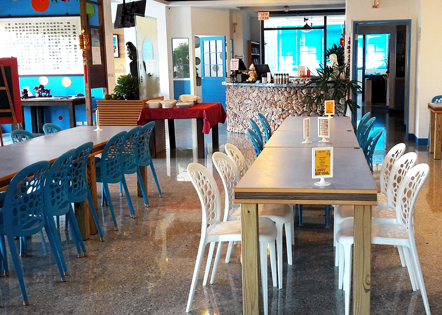
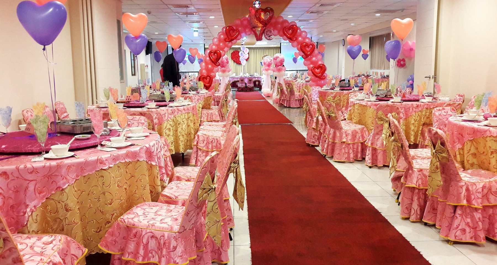

古今車用中景觀蔬食餐廳，位於新竹香山區安東彌勒山宗教園區，餐廳服務人員，皆為誠心快樂志工，茹素三十年以上，比比皆是，所以很多客人說，古今車用中餐點，不論是合菜；點餐；手工食品；包子、饅頭、粽子、東北水餃、蓮花干…等等，都是一時之選，非常好吃。
園區創辦人厚德大帝（高老前人），於1949年（民國38年） ，從中國東北遼寧，將「道」的種子，散發開來，傳來台灣，常勉勵後學們，落實安東家訓「孝、悌、慈；誠、敬、信」…

古今車用中景觀蔬食餐廳，位於新竹香山區安東彌勒山宗教園區，餐廳服務人員，皆為誠心快樂志工，茹素三十年以上，比比皆是，所以很多客人說，古今車用中餐點，不論是合菜；點餐；手工食品；包子、饅頭、粽子、東北水餃、蓮花干…等等，都是一時之選，非常好吃。
園區創辦人厚德大帝（高老前人），於1949年（民國38年） ，從中國東北遼寧，將「道」的種子，散發開來，傳來台灣，常勉勵後學們，落實安東家訓「孝、悌、慈；誠、敬、信」…

品牌、品質、品味
全國唯一老爺車景觀蔬食餐廳
古今車用中景觀志工餐廳
TEL：03-518-2615 ｜ 03-518-2625
新竹市香山區大湖里
南湖路 215巷255弄115號